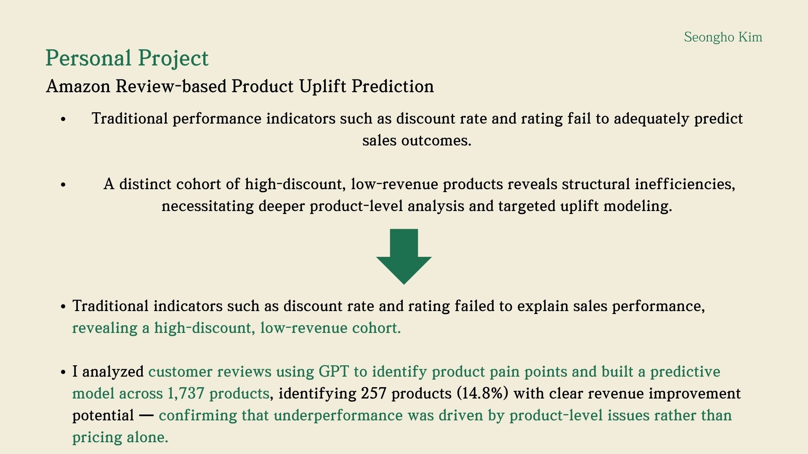

Amazon Review-based Product Uplift Prediction
Overview
This project is a product analytics and AI pipeline that identifies revenue leakage in Amazon products, extracts customer pain points from reviews with GPT, and predicts uplift opportunities at the product level. The core insight: traditional indicators like discount rate and rating fail to explain sales performance, so I dug deeper into review-level signals to find where the real problems are.
Problem Statement

E-commerce products showed inconsistent revenue performance despite high discount rates. The project set out to answer three key questions:
- Does higher discount actually drive more revenue?
- Are ratings predictive of performance?
- Where is revenue leakage occurring?
Project Walkthrough
1. Dashboard Overview

The analytical dashboard combines multiple views into one interface:
- Discount Rate & Revenue by Category (treemap) — Electronics dominates at 50.82% discount / $92M revenue, followed by HomeKitchen, MusicalInstruments, and ComputersAccessories
- Cost-Effectiveness (scatter plot) — Discount Rate vs Estimated Revenue, revealing the optimal discount band
- Top 5 / Lowest 5 Sales — Redmi products lead sales; low performers have similar ratings but minimal revenue
- Unprofitable Discounted Products — High-discount products with 4.0+ ratings but near-zero revenue
2. Discount Rate & Revenue Analysis

High-revenue categories are concentrated in the 45–55% discount band, indicating that moderate discounting maximizes revenue efficiency. Increasing discounts beyond this range does not proportionally increase revenue — implying diminishing returns.
3. Cost-Effectiveness Analysis

The cost-effectiveness scatter plot confirms the same pattern at the product level: revenue peaks in the 45–55% discount range, while discounts exceeding 60% do not generate proportional revenue gains. This reveals pricing inefficiencies — some products are being over-discounted without meaningful sales uplift.
4. Unprofitable Discounted Products

A critical finding: despite receiving 4.0+ ratings, many high-discount products generate minimal revenue. This means customer ratings have limited discriminatory power in predicting actual sales performance. The gap between perceived quality (ratings) and actual performance (revenue) pointed to the need for deeper product-level analysis — which led to the GPT review analysis step.
5. Key Findings & GPT-Driven Insights

The final analysis combined all findings into actionable conclusions:
- Traditional indicators fail — Discount rate and rating alone cannot explain sales outcomes
- Structural inefficiency revealed — A distinct cohort of high-discount, low-revenue products exists, requiring deeper product-level analysis
- GPT-powered review analysis — I analyzed customer reviews using GPT to identify product pain points and built a predictive model across 1,737 products
- 257 products (14.8%) identified with clear revenue improvement potential — confirming that underperformance was driven by product-level issues rather than pricing alone
What I Gained
- Product analytics thinking — Learned to move beyond surface-level metrics (discount, rating) and investigate structural revenue patterns to find where value is actually being lost.
- Using GPT for structured insight extraction — Applied GPT not for generation but for analysis — extracting product-level pain points from unstructured customer reviews at scale.
- Connecting analytics to business decisions — The project's value wasn't in the model itself, but in identifying 257 specific products with actionable uplift potential, making the output directly usable for product and pricing teams.
- Questioning common assumptions — Demonstrated that "high rating = good product" and "high discount = more sales" are not always true, reinforcing the importance of data-driven validation over intuition.
- End-to-end analytical pipeline — Built the complete flow from raw e-commerce data to dashboard visualization to GPT-driven insight extraction to predictive uplift modeling.